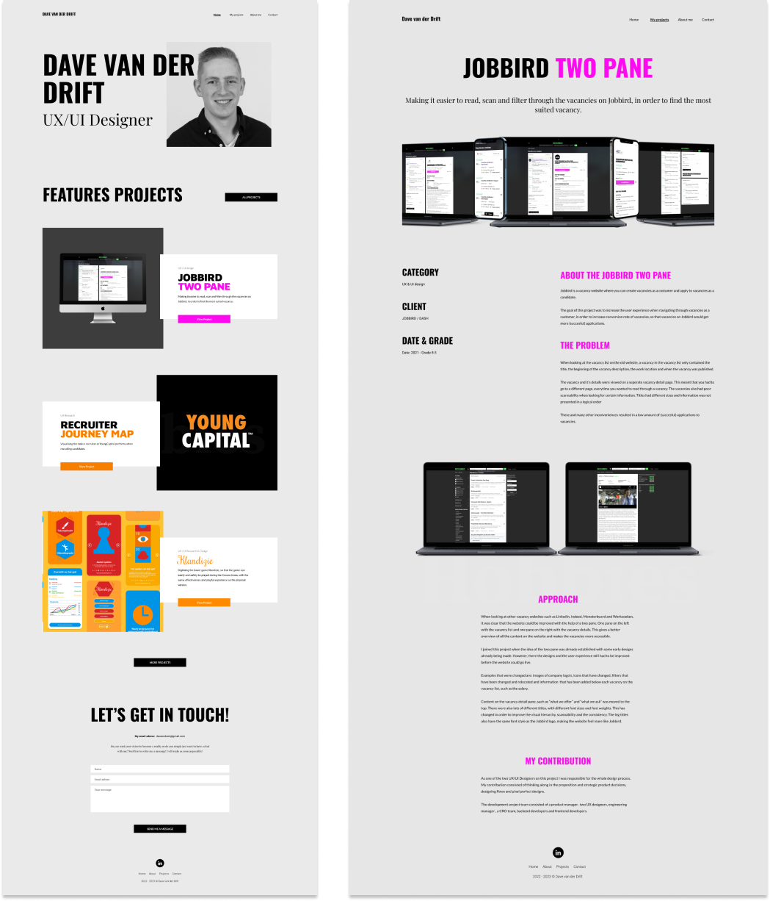
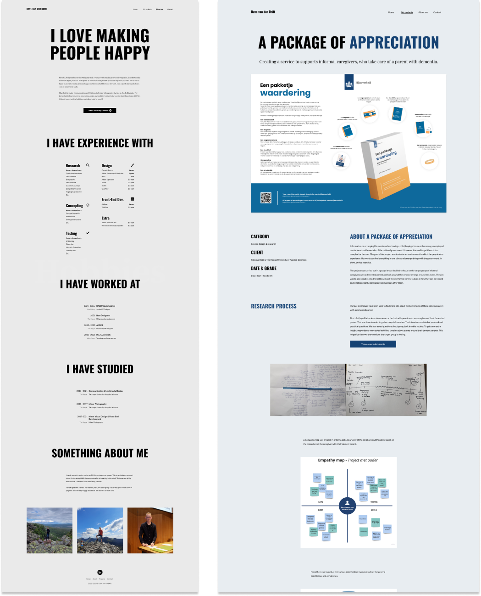

During my career, I always want to improve my skills as a UX and UI designer. This is why I also want to keep improving my portfolio website, in order to use these skills and show how I have improved. Currently I am busy improving my portfolio and I already want to show a sneak peak, since it will take some time before I can launch my improved website. I hope to be done as soon as possible, so stay tuned! Keep in mind, this is still a work in progress, so things will probably change.

